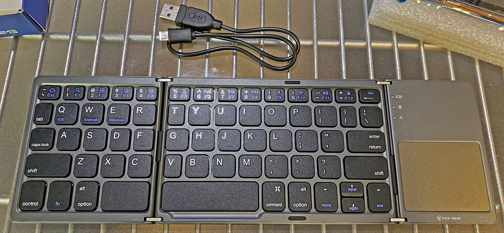

Ewin 折りたたみ式 Bluetooth キーボード・トラックパッドを購入した
ラズパイ4を操作するための入力デバイスとして、Ewin というメーカの折りたたみ式キーボードを購入した。

目次
本体と付属品を確認
購入したのは以下のリンクで見られる商品。本稿執筆時点で在庫切れみたい。


このキーボードはトラックパッドも搭載されており、Bluetooth 接続できるスグレモノ。値段は4,000円程度だった。

付属品はこんな感じ。充電用の Micro USB ⇔ USB ケーブル、ソフトケース、日本語の説明書などが付属。

対応 OS は Windows、Mac、iOS、Android と、ひととおり対応している。「iOS でトラックパッドが使えない」とされていたが、iOS 13 ならトラックパッドにも対応しているので、iOS アップデートすれば OK。
充電中は赤い LED が付き、Bluetooth の接続状況は青い LED で示される。
使用感をレビュー
Windows、MacBook (MacOS)、iPhone 11 Pro Max (iOS)、Raspberry Pi 4 に接続して検証した。
全体的な質感は値段相応か。悪くはないかな。ただ、折りたたみのヒンジ部分はヤワい印象で、危なっかしい。開いた部分含めて平たい所に置いて使わないと、すぐにヒンジが折れそうな気がする。不安。ｗ
トラックパッドの精度は悪くない。ただ、カーソル移動以外の操作が敏感すぎるかな。タップでクリック扱いになったり、2本指スライドでスクロールしたりするのだが、この感度が良すぎるせいで誤ってクリックしてしまったり、スクロールのつもりでピンチ操作とみなされてしまったりする。慣れが必要か。
iPhone (iOS) でトラックパッドを有効にするには、「設定」→「アクセシビリティ」と進み、「AssistiveTouch」を ON にするだけ。不自由なく使えている。
キーボード部分も、ちゃんと入力できる。全体的なピッチが狭い他、ヒンジ部分周辺のキーはより小さくなっているので、コチラも慣れが必要。ファンクションキーは fn キーと同時押しになるが、一応使える。Esc キーが fn 同時押しになるのはちょっと面倒くさいかな。
スペースキー左に Control と Alt、スペースキー右に Command と Alt キーがある。左右に Alt キーがあるので、Windows と Linux では Alt キーの空打ちによる IME 切り替えが操作できる。
MacOS の場合、Cmd キーが右側にしかないので、Karabiner-Elements で実現していた 「左右 Cmd キー空打ちによる IME 切替」ができない。Control + Space などで代替するしかない。また、Cmd キーが右側にしかないということで、コピペ操作は「右 Cmd + C」などとなり、不慣れな人が多いかも。
Raspberry Pi 4 (Raspbian OS) にも、設定不要で接続できた。Bluetooth 接続自体は問題なくできるが、接続が切れるのが若干早いかもしれない。bluetoothctl コマンドの trust で信頼設定しておくと良いだろう。
Micro USB ケーブルは充電専用で、パソコンと有線接続したからといって USB 駆動するワケではなかったのが残念。
類似品が多いので購入は注意
今回自分は「Ewin」というメーカの製品を買ったが、Amazon で調べると、ほぼ同一の画像を使用した商品が多数出品されている。
Ewin は4,000円程度で販売されていたが、他のメーカのモノは3,000円代のモノもあった。
Ewin は以下のサイトなど、実際の商品写真をアップしているレビュー記事がいくつか見つかったが、他のメーカの商品はそうした記事が見当たらず、信用できなかったので購入しなかった。
他のメーカの類似製品がまともに使えるのかは分からない。Amazon で売っていた Ewin 製のモノであれば、今回自分が購入したように、一定のクオリティで実用できるので、値段だけ見ると割高に見えるかもしれないが、安心を買っても良いかもしれない。
以上
どんな OS でもサクッと接続でき、マウスとキーボードをセットで使えるようになる。
若干剛性が心配ではあるが、安いのでこんなもんかしら。